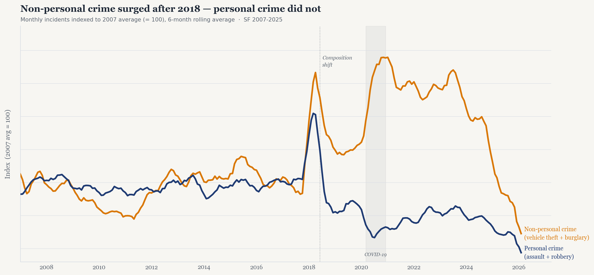

The San Francisco Police Department publishes incident reports going back to 2003. Each record is a single reported incident — a burglary, an assault, a vehicle theft — along with a date, a location, and the police district where it was filed. The dataset covers millions of incidents and is publicly available.
For this story we focus on four categories: assault and robbery, grouped as personal crime because they involve direct harm to a person, and vehicle theft and burglary, grouped as non-personal crime because the harm is primarily to property. This is a deliberate simplification designed to make one specific pattern visible — not a legal classification.
A visible split starts around 2018
Before 2018 the two groups move together — rising and falling in roughly the same rhythm across more than a decade. Then around mid-2018 both series spike sharply. What matters is where they land afterward.
Non-personal crime rebounds strongly and stays elevated well above its pre-2018 level through the early 2020s before declining again. Personal crime does the opposite: it falls below its historical range and stays there. The COVID period deepened both movements temporarily, but the structural gap was already opening before the pandemic arrived.

The most honest summary is not that crime rose or fell. It is that the composition of reported incidents changed. That raises a geographic question: did this happen everywhere in the city, or was it concentrated in specific places?
The increase was concentrated in a handful of districts
If the post-2018 shift were uniform across the city, every police district would show a similar increase. The map tells a different story. The Tenderloin — a small, densely policed district near the center of San Francisco — stands out immediately with an increase of over 100%. Most other districts also increased, but by considerably less.
This uneven geography matters. It suggests the citywide trend in Figure 1 is being pulled upward by a small number of specific places, not by a broad citywide change. Hover over any district to see the exact percentage.
A large percentage increase in the Tenderloin does not by itself prove that more crime is occurring there relative to elsewhere — it could also reflect more reporting, denser officer presence, or changes in how incidents are classified. But it does identify where in the data the shift is most visible, and that points the story toward a specific question: is the Tenderloin genuinely different from the rest of the city, or is it just an extreme version of a city wide pattern?
Tenderloin is an outlier — but the story differs by crime type
The final figure compares Tenderloin directly to every other district, one at a time, across all four crime categories. Use the dropdown in the top-right corner of the chart to pick any district. The navy dot is always Tenderloin; the orange dot is the selected district. Dots to the left of zero mean that category decreased after 2018.
Start with Bayview — the district with the second-largest overall increase in Figure 2. Even against Bayview, Tenderloin's vehicle theft increase of +359% dwarfs Bayview's +120%. But look at the personal crime rows: Bayview's assault fell by 27% and robbery fell by 22%, while Tenderloin's both increased. These two districts both appear dark on the map above, but they got there in completely different ways.
This pattern holds across most districts. For vehicle theft, Tenderloin is an extreme outlier regardless of who you compare it against. For burglary the gap is real but smaller. For assault and robbery the picture reverses — many districts actually saw personal crime fall while Tenderloin's rose, meaning Tenderloin's shift was not simply a more intense version of a citywide pattern, but something more specific to that place.
Taken together, the three figures tell a coherent story. San Francisco's crime composition shifted after 2018 — non-personal crime rising, personal crime falling. That shift was geographically concentrated, especially in the Tenderloin. And within the Tenderloin, vehicle theft is the dominant driver, increasing at a scale no other district comes close to matching.
What explains that concentration is a question this data cannot fully resolve on its own — but context helps. Several documented factors converged on the Tenderloin specifically in this period. California's Proposition 47, passed in 2014, reclassified theft under $950 as a misdemeanor; law enforcement and journalists have widely cited its accumulated effect on vehicle break-in rates across the city, with the Tenderloin's density of parked cars making it a particular target.5 The COVID-19 lockdowns emptied offices and parking structures in the Tenderloin corridor, concentrating unattended vehicles in an area with reduced foot traffic and natural surveillance — a pattern documented in citywide burglary data as well.6 And in December 2021, Mayor London Breed declared a state of emergency specifically in the Tenderloin, citing open drug markets and street disorder; the increased police presence that followed would itself raise the number of recorded incidents even if underlying behavior stayed flat.7
None of these factors fully explains a +359% increase in vehicle theft. But together they illustrate why the Tenderloin is not simply an unlucky neighborhood — it sits at the intersection of several policy changes, enforcement decisions, and structural conditions that all pushed reported incidents upward simultaneously. The data shows the pattern; the context helps explain why it is this district, and not another.
Contributions
This project was completed jointly by Ylfa and Tanja through shared discussion, analysis, interpretation, and revision of the final data story.
Ylfa took the lead on developing and refining the visualizations, including a larger share of the graph design and implementation. Tanja contributed to the analysis, interpretation, writing, and integration of the final website.
References
- DataSF. Police Department Incident Reports: Historical 2003 to May 2018. City and County of San Francisco Open Data Portal.
- DataSF. Police Department Incident Reports: 2018 to Present. City and County of San Francisco Open Data Portal.
- Richardson, R., Schultz, J. M., Crawford, K. Dirty Data, Bad Predictions: How Civil Rights Violations Impact Police Data, Predictive Policing Systems, and Justice. NYU Law Review Online. A reminder that police data reflects institutional decisions — not only underlying behavior.
- Segel, E. & Heer, J. (2010). Narrative visualization: Telling stories with data. IEEE Transactions on Visualization and Computer Graphics, 16(6). The magazine genre framing used here comes from this paper.
- Dolan, M. & Larimer, S. (2018). California voters approved Prop. 47 to reduce prison crowding. Did it work? Los Angeles Times. On the relationship between Proposition 47's misdemeanor threshold and property crime reporting.
- Barber, E. (2021). Burglaries surged during COVID. Where, and why? Mission Local. Documents the geographic concentration of burglary increases in dense urban corridors during lockdown.
- City and County of San Francisco. (2021). Mayor London Breed declares state of emergency in the Tenderloin. Office of the Mayor press release, December 17, 2021.